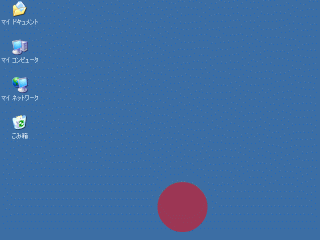

ActionScript版 Apollo アプリを作ってみる
第２回は ActionScript で Apollo アプリを作ってみます。
ActionScript を触ったことがない人にも分かりやすく書いたつもりですので、ActionScript が初めての人も恐れずに読んでみてください。
第１回 の HTML＋JavaScript で作るときは
- HTML+JavaScript の作成
- ADF の作成
- 実行
- パッケージ化 (.air の作成)
という手順でしたが、今回は
- ActionScript の作成
- コンパイル (.as→.swf の生成)
- ADF の作成
- 実行
- パッケージ化 (.air の作成)
とコンパイルの手順が増えます。
では、さっそく具体的に説明していきましょう。
ActionScript の作成
単に丸を描くだけの ActionScript です。Test.as として保存します。
package{
import flash.display.Sprite;
public class Test extends Sprite{
function Test(){
graphics.beginFill(0xff0000, 1);
graphics.drawCircle(50, 50, 50);
graphics.endFill();
}
}
}
各行の意味について簡単に説明します。
- 1行目:
packageは、ひとまずはおまじないだと思ってください。 - 2行目:
importでflash.displayに含まれるSpriteクラスを利用することを宣言しています。flashパッケージというのは Flash 実行環境に ActionScript に初めから備わっている基本的なクラス群です。 - 4行目:
Spriteというのは、ActionScript だけで SWF を作るときに必ず継承するクラスです。ここでは、Spriteを継承したTestクラスを宣言しています。 - 5行目:
Testクラスのコンストラクタを宣言しています。 - 6～8行目:
graphicsオブジェクトを使って円を書いています。このあたりは、C# や Java で描画をしたことがある人ならば理解できるのではないでしょうか。graphicsはSpriteクラスのプロパティです。- 6行目: ブラシの色を設定しています。第1引数の
0xff0000はrgb(255,0,0)すなわち赤をあらわします。第2引数はα値です。0～1 の範囲で、0 が透明、1 が不透明となります。 - 7行目: 円を描きます。引数はそれぞれ、x, y, 半径 をあらわします。
- 8行目:
beginFill()で設定した内容にもとづいて描画を行います。
- 6行目: ブラシの色を設定しています。第1引数の
コードだけを見ると、Java っぽい、と思う人も多いかもしれませんね。でも、言語仕様的には ActionScript は JavaScript をベースにしています。JavaScript に Java のオブジェクト指向を足した感じでしょうか。JavaScript に似ているところは、このページの後半で説明します。
コンパイル
Apollo アプリとして動かすためには ActionScript のままではだめです。コンパイラを使って SWF 形式のファイルにします。
Flash Player で再生する SWF を作る場合は mxmlc というコマンドを使うのですが、Apollo アプリ用の SWF を作るときは amxmlc という別のコンパイラを使います。
コマンドラインから次のように実行します。
$ amxmlc Test.as
次のように表示されれば成功です。Test.as と同じ場所に Test.swf が生成されます。
Loading configuration file C:\apollo\frameworks\apollo-config.xml
c:\....\Test.swf (619 bytes)
Test.swf は今のところブラウザで開くことができますが、Apoolo API を使うと実行時の参照エラーになってしまいます。
ADF の準備
次に、アプリケーションの情報を記載する ADF を作ります。前回とほとんど同じです。rootContent の中が違っているぐらいです。
<?xml version="1.0" encoding="UTF-8"?>
<application appId="com.nitoyon.tech.test" version="0.1" xmlns="http://ns.adobe.com/apollo/application/1.0.M3">
<properties>
<name>Test</name>
<publisher>nitoyon</publisher>
<description/>
<copyright/>
</properties>
<rootContent systemChrome="standard" visible="true">Test.swf</rootContent>
</application>
Test-app.xml として保存します。
ためしに実行
実行するにはコマンドラインから次のように入力します。このへんも前回と同じですね。
$ adl Test-app.xml
ウインドウが表示されれば成功です。
ウインドウ枠が表示されるのがちょっとかっこ悪いです。そこで、 ADF の rootContent タグを修正します。
これ以降では、一番右の systemChrome="none" transparent="true" を指定したものとして説明していきます。これが一番それっぽいですよね。
Windows のローカル アプリ開発では四角じゃないローカル アプリケーションを作るのは実はけっこう大変でなのですが、こんな簡単なソースコードでできてしまうんだから驚きです。
ウインドウ枠がないとアプリケーションを終了させにくいかもしれませんが、Windows では Alt+F4 を押すか、タスクバーを右クリックして終了を選べば OK です。Mac の人は、それ相当の方法で終了させてください（すいません、Mac は分からないもので）。
ActionScript を修正してみる
ここまでくれば、あとは前回と同じようにやればパッケージ化も簡単です。
そのままパッケージ化してしまってもつまらないので、Test.as を修正してみましょう。順を追って改造していきましょう。
1. 透明度を変える
まずは簡単な修正から。円の透明度を変えてみます。
package{
import flash.display.Sprite;
public class Test extends Sprite{
function Test(){
graphics.beginFill(0xff0000, 0.5);
graphics.drawCircle(50, 50, 50);
graphics.endFill();
}
}
}
beginFill() の第２引数に注目です。
再度、amxmlc でコンパイルして、adl で実行してみましょう。
半透明になってますね。
2. イベント ハンドリングを行う
GUI アプリケーションの実装で欠かせないのが、イベントハンドリングです。
ActionScript のイベント登録は addEventListener 関数で行います。
package{
import flash.display.Sprite;
public class Test extends Sprite{
function Test(){
graphics.beginFill(0xff0000, 0.5);
graphics.drawCircle(50, 50, 50);
graphics.endFill();
stage.addEventListener("click", function():void{
stage.window.close();
});
}
}
}
丸をクリックしたらアプリケーションが終了するようになりました。
stage という言葉がいきなり出てきてびっくりするかもしれませんが、これは SWF 全体を指し示す DisplayObject です。Flash の全ての表示オブジェクトは DisplayObject を継承していて、DOM ツリーのようなものを形成しています。stage は DOM ツリーのようなもののルートにあたる DisplayObject のことです。
この stage の addEventListener() 関数を呼ぶことで、stage 上で発生したイベントを拾うことができるようになります。イベント発生時の処理は、無名関数で行っています。
無名関数の中に出てくる stage.window というのはアプリケーションのウインドウのことです。ウインドウに対して close メソッドを呼び出しているので、アプリケーションは終了します。stage.window の他のメソッドやプロパティについては、Apollo マニュアルの NativeWindow クラスの項を参照してください。
stage や stage.window などがいきなり出てきてややこしいかもしれませんが、この部分を JavaScript ライクに書き直してみると、こうなります。
document.body.addEventListener("click", function(){
window.close();
}, false);
JavaScript に馴染みがある人にはしっくり来るんではないでしょうか。JavaScript では addEventListener() の第３引数は省略できません。また、IE では addEventListener が使えないので、このコードでは動かない点に注意してください。
タイマー処理を行う
最後に、タイマー処理を使って動きをつけてみましょう。タイマー処理には setTimeout() や setInterval() 関数が使えます。JavaScript と同じですね。
package{
import flash.display.Sprite;
import flash.utils.*;
public class Test extends Sprite{
function Test(){
graphics.beginFill(0xff0000, 0.5);
graphics.drawCircle(50, 50, 50);
graphics.endFill();
stage.addEventListener("click", function():void{
stage.window.close();
});
var rad:int = 0;
setInterval(function():void{
stage.window.x = Math.cos(rad / 180 * Math.PI) * 200 + 200;
stage.window.y = Math.sin(rad / 180 * Math.PI) * 200 + 200;
rad += 5;
}, 50);
}
}
}
50ミリ秒ごとに5度ずつ回転します。

動きを工夫すれば鬼ごっこゲームが作れそうですね。
先ほどと同じく JavaScript で書き直してみます。JavaScript には window.x がないので window.moveTo() を使ってみました。window.moveTo() 関数は広告フィルタなどでブロックされることが多いので、最近は実用的ではありませんが...
setInterval(function(){
var x = Math.cos(rad / 180 * Math.PI * 200 + 200;
var y = Math.sin(rad / 180 * Math.PI * 200 + 200;
window.moveTo(x, y);
}, 50);
4. 高性能に
ここまでは分かりやすくするために、動作速度や実行効率を犠牲にしています。
そこで、ソースを書き直して性能を上げてみます。
package{
import flash.display.Sprite;
import flash.utils.*;
public class Test extends Sprite{
private const CIRCLE_RAD:int = 50;
private const RAD:int = 200;
function Test(){
var s:Sprite = new Sprite();
s.graphics.beginFill(0xff0000, 0.5);
s.graphics.drawCircle(CIRCLE_RAD, CIRCLE_RAD, CIRCLE_RAD);
s.graphics.endFill();
s.x = RAD * 2;
s.y = RAD;
s.x = s.y = 0;
addChild(s);
var rad:int = 0;
s.addEventListener("enterFrame", function():void{
s.x = Math.cos(rad / 180 * Math.PI) * RAD + RAD;
s.y = Math.sin(rad / 180 * Math.PI) * RAD + RAD;
rad += 5;
});
s.addEventListener("click", function():void{
stage.window.close();
});
}
}
}
簡単に説明しておきます。
- マジックナンバーは嫌なので const として定義しました。
- ウインドウの位置を変更してアニメーションするのではなく、円を表示するための
Spriteを用意し、それを移動させるようにした。これに伴い、コンパイル時のオプションとして-default-size 500,500を付け加えないと、円が下にきたときに欠けてしまいます。 - JavaScript との互換性を強調するために
setInterval()を使っていましたが、凝ったアニメーションをするのならenterFrameイベントをハンドリングしたほうが高速に動作します。enterFrameイベントは１フレームが描画されるごとに呼び出されます。デフォルト値は 24fps（１秒に24回）ですが、コンパイル時オプションの-default-frame-rateやstage.frameRateで変えられます。
まとめ
いかがだったでしょうか。Apollo アプリの書き方、というよりは、JavaScript が書ける人のための ActionScript 講座のようになってしまいましたが、分かりやすいと思っていただけたなら幸いです。
ActionScript を勉強したい方は Adobe - Flex： Flexドキュメンテーション から公式のドキュメントをダウンロードしてみてください。下のほうにある「ドキュメンテーションzipファイル」から一括でダウンロードすることをお薦めします。ActionScript の使い方が事細かに解説された「ActionScript 3.0のプログラミング (prog_actionscript30.pdf)」や HTML のリファレンスガイドなど、参考になるファイルが盛りだくさんです。
ActionScript 3.0 は、現在策定中の ECMAScript 第4版の基本になっていて、そのまま大きな仕様変更がないまま策定されそうです（参考：AS3 compatibility）。さらに、Firefox の JavaScript 実行環境は ActionScript のバーチャルマシンである Tamarin のコードと統合されることも決定しています。ということで、将来的には Firefox で ActionScript 3.0 のように package や class といったキーワードを使って JavaScript を書ける日がくるのです。
さぁ、ActionScript 3.0 と Apollo で遊んでみてはいかがでしょうか。
次回予告
次回は、SWF の中に HTML を表示させて連携させてみます。